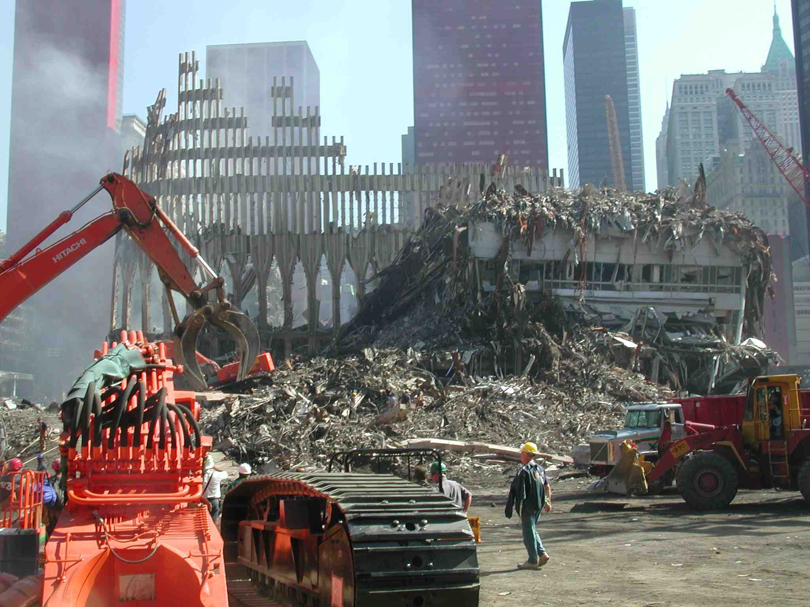 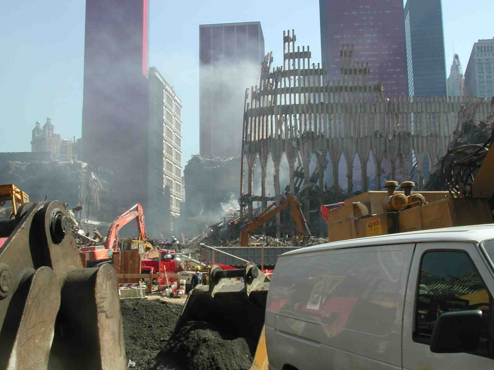 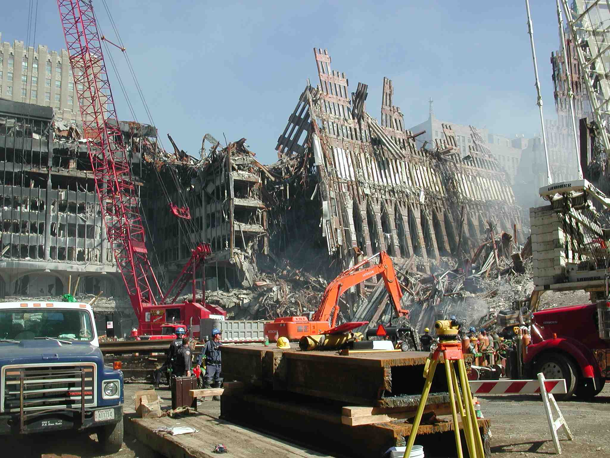 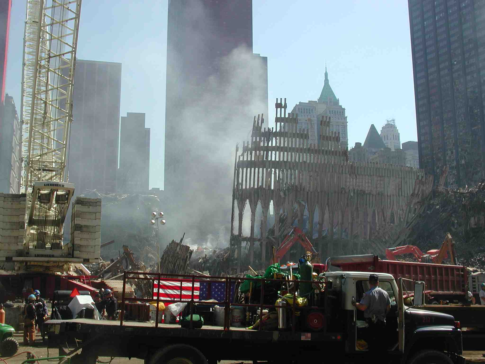 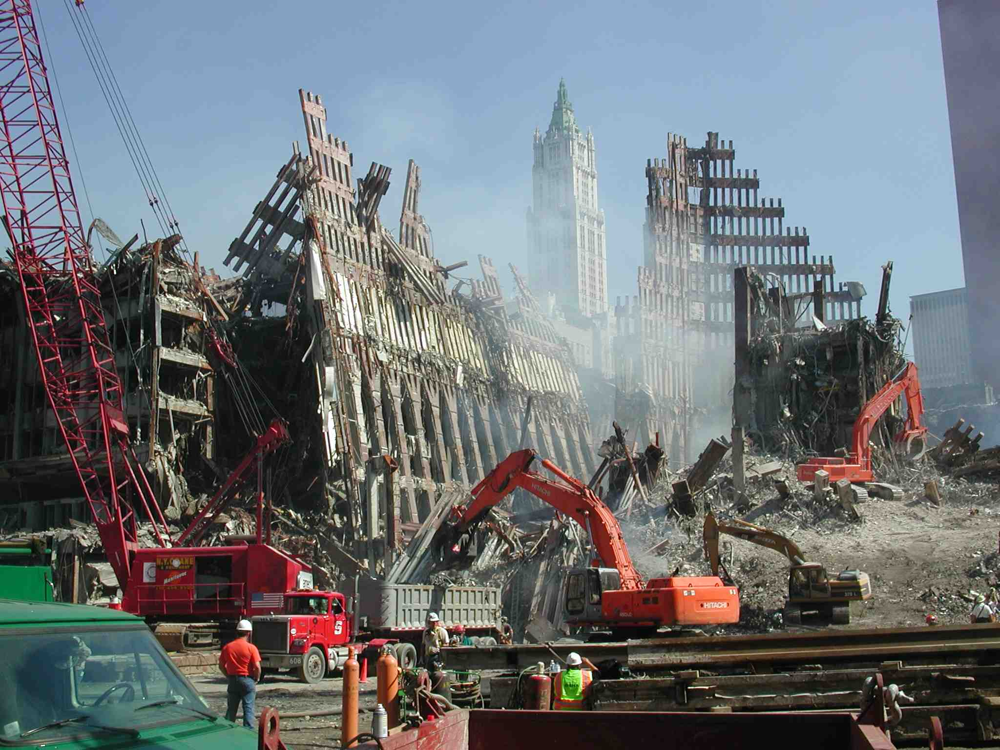  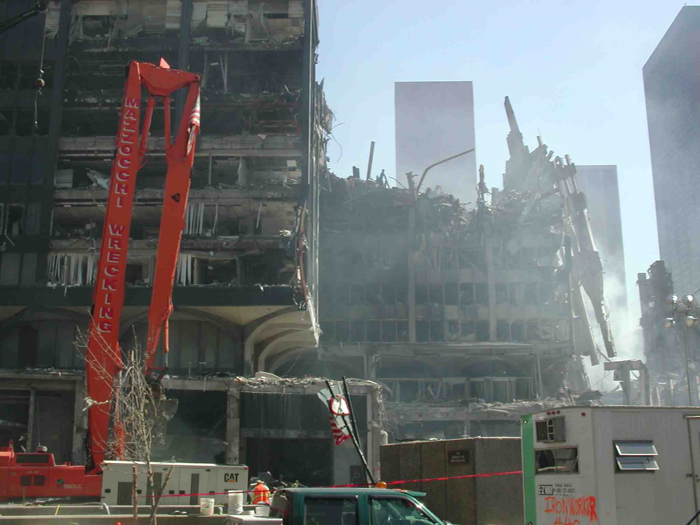 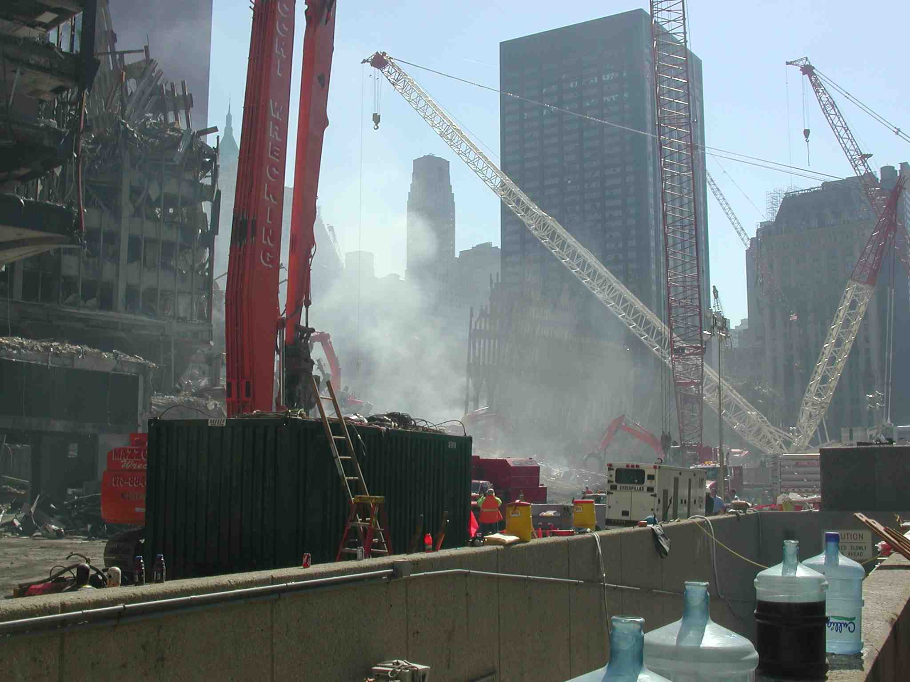 
#30, #32, #36, #41, #43, #44, #49, #58, #60, #64
Note the steam rising. The pic album is dated October 3, 2001,
so I assume the pictures were taken before that.
(10/3/01) Source: by Anonymous Photographer
|
#30
(10/3/01) Source: by Anonymous Photographer
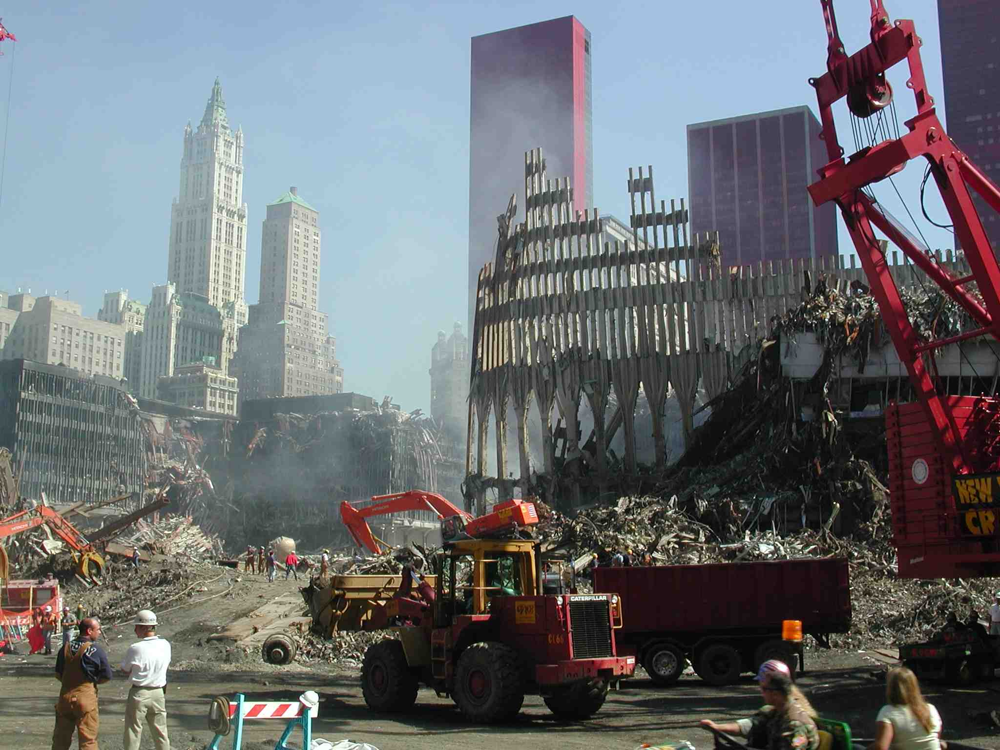
#31
Hey! Is that part of a plane? Who knows. I'm
talking about the thing that the backhoe looks like its driving up to,
at the base of the hill, on the right side of those two beams. (right
above the sawhorse with a hat on one end and rope on the other.)
(10/3/01) Source: by Anonymous Photographer
|
|
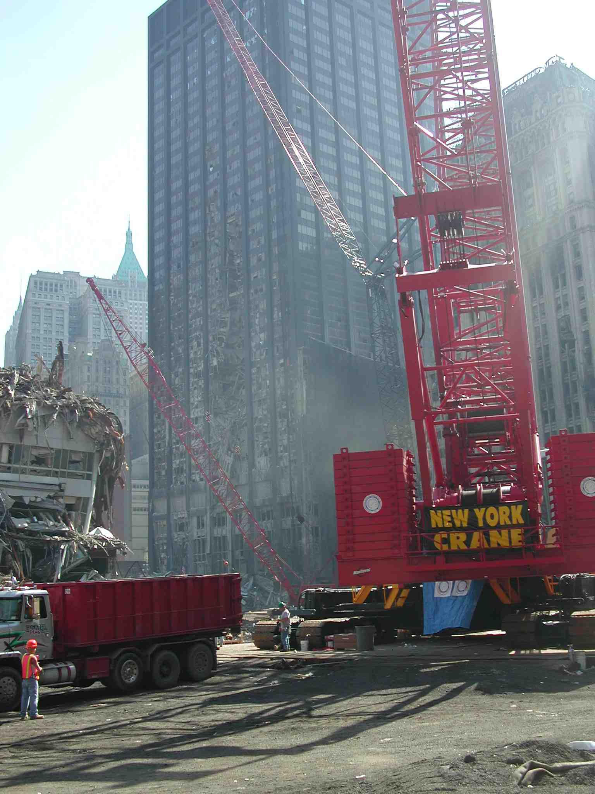
#34
My goodness! What a clean demolition site! That ground
almost looks clean enough to eat off of. That's amazing, considering
they're just cleaning up the trash to cart away. (But, they need
to be sure to get every bit of it!)
(10/3/01) Source: by Anonymous Photographer
|
|
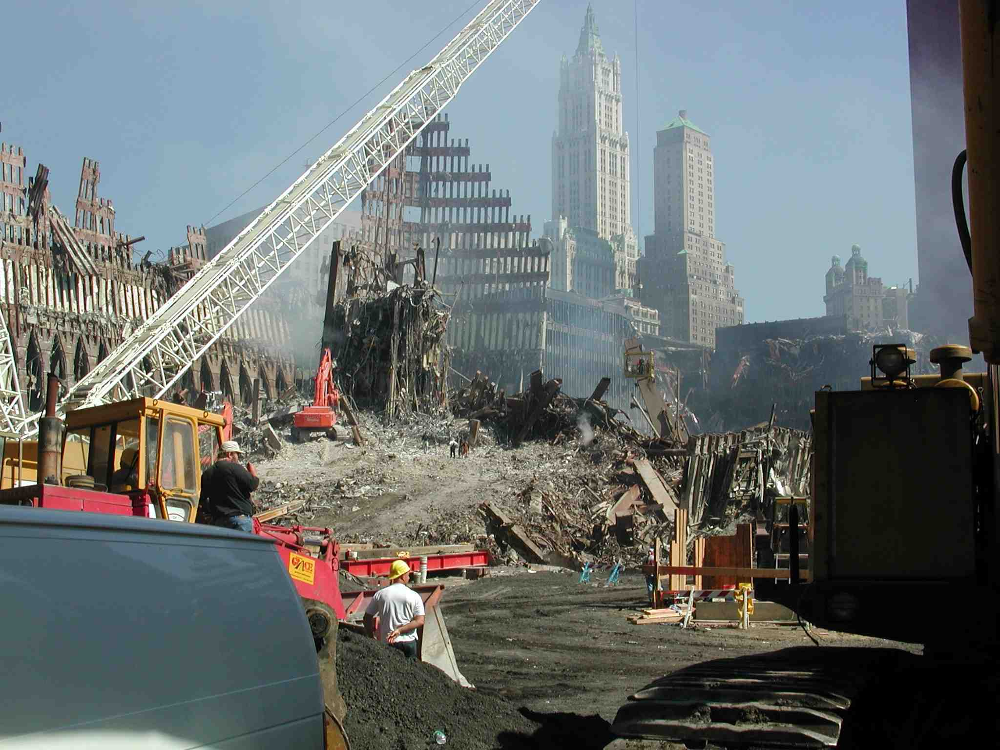
(10/3/01) Source: by Anonymous Photographer
#35
Wow! A picture from the inside of the WTC area. Just
a few core columns survived in place. Wow, notice the fine hill of
stuff. i.e. "Dust mound" from inside the borders of this WTC
tower. I think it's WTC1.
Hey, check out those guys in the yellow cage, hanging
from a string supported by the crane. (Follow the black string coming
down from the top edge of the photo and you will see them.)
These guys are dangling over the site. Why? Maybe that's the
only way they can look down into that region because of the heat?
Maybe these are the folks who came in the white van (shown in the next
picture).
|
|
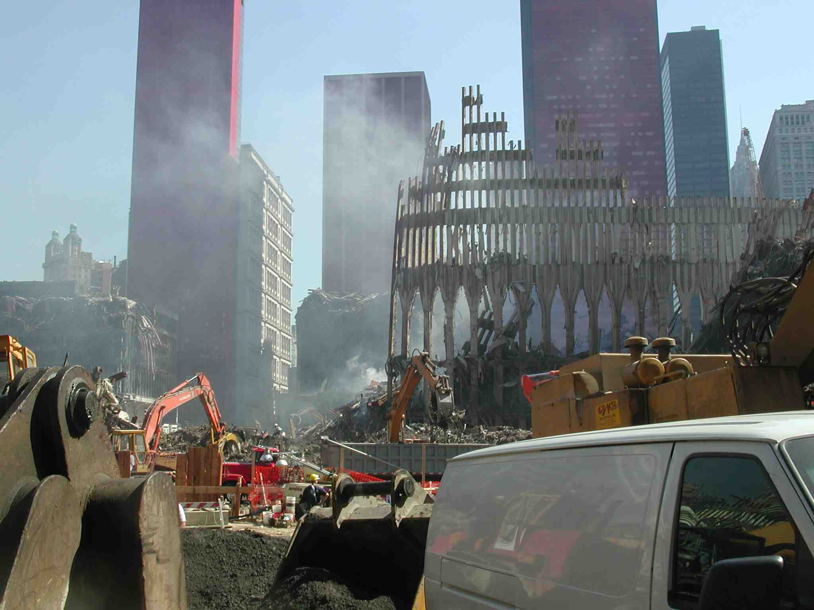
#37
Check out the white van on the far right. It's nice and white
(clean) and has tinted windows so you can't see in. This doesn't
look like a construction-worker's van. It even looks a bit in the
way for that yellow scoop right behind it.
(10/3/01) Source: by Anonymous Photographer
|
|
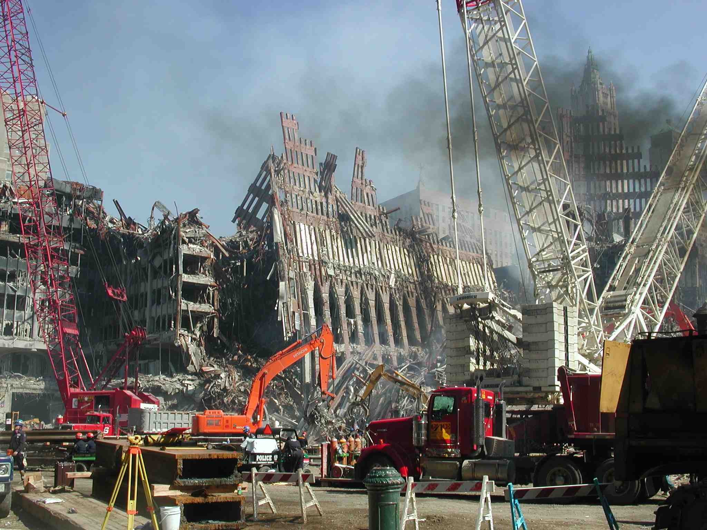
(10/3/01) Source: by Anonymous Photographer
#39
Check out those core columns in the lower left part of the picture,
next to the transit. The top one has weird holes in the end.
These guys look really clean! Perhaps it's early in the morning.
Sun is shining from the southeast.
Ooooo... it looks like they have some core columns already loaded up,
but maybe they are just stacked and waiting.
(left edge of photo, in front of the red truck that is parked in front
of the red crane) [Click here
for a zoomed-in view of the beams.]
|
|
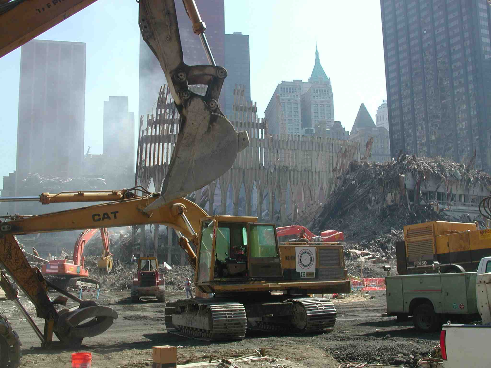
(10/3/01) Source: by Anonymous Photographer
#40
Obviously, no buckling was involved:
|
(10/3/01) Source: by Anonymous Photographer
#41
Check out those core columns stacked up at the bottom of the picture.
It looks like a bear chewed off the ends, except they're really flat on
the ends! Was this a special chain saw? (as with
diamond-impregnated teeth?) It's amazing what straight cuts those are!
Man, they must have worked hard cutting those things up! This one
sure didn't come apart at the joint. Those bolts and the weld jobs
are still in place. Obviously, they thought it was easier to saw
through the beams than to attack the bolts. How interesting.
I kind of wonder if that orange color on both beams, particularly the
lower beam's top-right surface, is from excessive heat. It
looks like rust, but how could so much rust have developed in such a short
time? Also, there are shiny, metallic flakes, on and near the cut
ends, along with burnt-looking particles. What could have caused
this? Perhaps high-energy explosives?
The top beam has a weird hole in the end (lower-left corner).
There's also a hole in the other side, but it's hidden behind the transit
in this picture. I wonder what the transit is for.
OK, here's a case for controlled demolition!� If the beams failed
from being over stressed (like pancaking would cause), then why didn't
they break at their weakest place??? At the joints, the beams are
bolted and welded together. Welding (which induces a thermal gradient
and locks in residual stresses) leaves the material in that region a little
weaker. In addition, just the sudden change in geometry will cause
stress concentrations. [More is not always better! For a constant
loading, a beam of width "a" that abruptly widens and then abruptly narrows
back to width "a" will have higher stress near those joints where the geometry
changes than if it were a constant width "a" the entire length.]
So, if these beams were over stressed (from "pancake" loading),
I would expect them to fail in the neighborhood of the joints. None
of the beams in these pictures appear to have failed at a joint!
Note: it appears that many of the exterior columns did fail at the welded
joints. So, why didn't the core columns fail that way, too?
[Click here
for a zoomed-in view of the beams.]
|
|
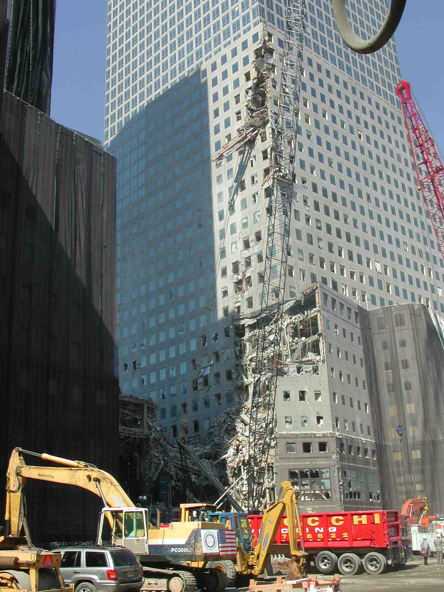
(10/3/01) Source: by Anonymous Photographer
#42
Notice the license plates on the back of the silver station wagon.
I can't quite tell, but it looks like a US-gov plate. It's sure not
a NY, CN, NJ, or PA regular plate. Maybe it belongs to the suits
(far right). Interesting: the guy in the full suit looks like he's
giving instructions, rather than listening to a guided tour. Hmmm...
I wonder why those windows on the front (right) face are missing.
Perhaps they were blown out? I can't imagine a beam would sail through
all of those windows without scraping any part of the window frame.
Also, the entire window is missing, unlike the left side of that building,
which is in the shadow. Those on the left side have holes broken
out of the glass, but the edges remain. I think that's what happens
when junk hits it (vs. a blast of air).
|
(10/3/01) Source: by Anonymous Photographer
#44
I think we have a few core columns still in place! Wow, they're
collecting them as fast as they can. Check out the stack of them
in the lower right corner. Hey, why do some of them have burnt marks?
Also, isn't it weird that they don't have any exterior columns stacked
up? Are they saving the easy ones for last? And why are they
in such a hurry to remove the core columns before the exterior columns?
[Click here
for a zoomed-in view of the beams.]
|
|
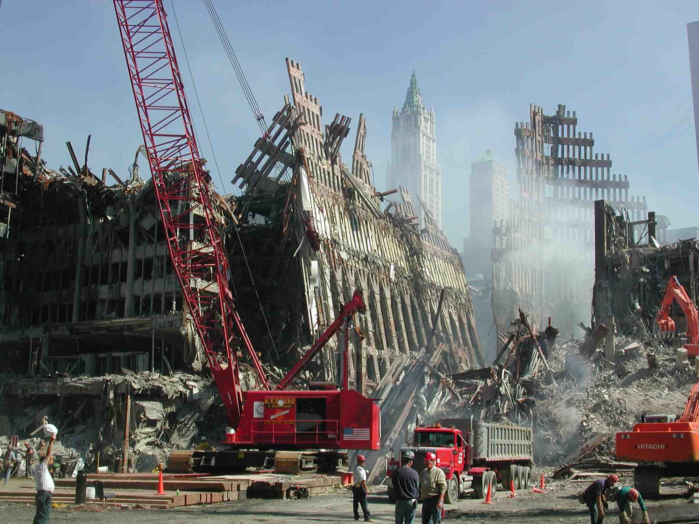
(10/3/01) Source: by Anonymous Photographer
#45
Clearly the core columns were the first to be hauled away. They
seemed to be of prime interest, like they're in a race to get them.
Doesn't it make more sense to bring down those outer columns, first, before
they fall on someone? Also, they don't look as hot as those core
columns. Why not get the outer stuff, first, then work your way in
to those core columns? That would also give the core columns more
cooling time. That would be so much easier and SAFER!
Wow! Check out that tall pipe that's just inside the tallest outer
columns, just to the left of the corner. It must be 10-stories tall!
If this building collapsed in on itself, why is this thing so straight?
It appears to be free standing. I wonder what it is. I thought
the bathrooms were in the core area. Could this be a mail tube?
:-) Hmmm... maybe it was a water pipe or sewer line from
a floor higher up and just stabbed into the ground, there, like a javelin?
Some of these guys don't look like construction workers, like the guy
in the red hat, in front of the flag on the red crane. I wonder what's
in his back pocket -- or belted around him. Who wears a white shirt
to a site like that and keeps it clean? He may have a clipboard.
The guy in the green hat looks like a construction worker... and he has
a cell phone as well as something in his back pocket. That the expected
appearance of someone who belongs there as well as the guy he's talking
to.
Now, look at the remains of the in-place core columns. Aren't
those columns amazingly straight to have failed by an overload?
Why don't they look crushed? Why doesn't this space look overstuffed?
Near the highest point in that cluster of remaining core columns, there
are long, narrow, tubes that look like they could be wiring conduit.
They are too straight to have had a building collapse on top of them.
One lone pipe is poking straight up, by itself, unsupported. Gee...
wouldn't you expect it to be wadded up like an accordion?
Why are they cut off straight, all at the same altitude. Isn't
this a statistical anomaly to have had all of them fail in the same way,
at the same height?
I assume this is the elevator shaft area. So, why isn't all the
debris just packed in there hard? So, if these columns are
still standing, wouldn't you expect the bottom of these "hollow shafts"
to have a huge amount of stuff pounded in them as if a huge hydraulic press
mashed stuff in and then pounded on it?
That building on the left (WTC5 or WTC6) looks the way I'd expect a
"collapsed" building to look. It's got bent columns, the structure
looks distorted (vertical columns are no longer vertical), and the "stuff"
falling from it has a variety of sizes. The building didn't reduce to steel
beams and micron-size powder. I'll bet you could find a book case
or file cabinet under that building. And, ironically, that building
did have a raging fire! ;-)
|
|
{kind=link}
{kind=link}
{kind=link}
{kind=link}